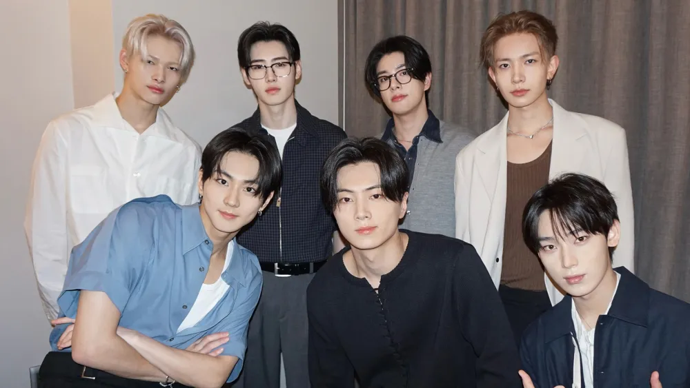
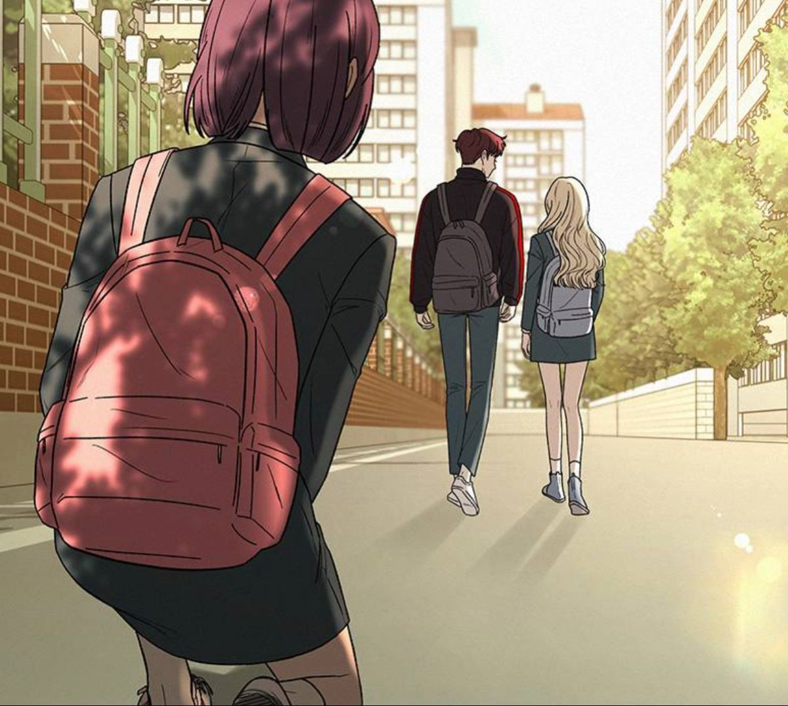

1. ENHYPEN BERLIBUR SETELAH JADWAL PADAT

2. DUDUK DAPAT MEMBATALKAN PUASA? SIMAK PENJELASANNYA.


4. PENGARUH PHOTOCARD DAN MERCH BAGI FANS KPOP

5. HUBUNGAN TANPA STATUS TAPI PUTUS?

NEWS
Website ini saya buat untuk memenuhi tugas mata kuliah Desain Web Yang diampuh oleh Bapak Nasrun Marpaung. Berikut adalah artikel-artikel yang saya buat.
Klik kategori yang anda inginkan untuk membuka artikel.